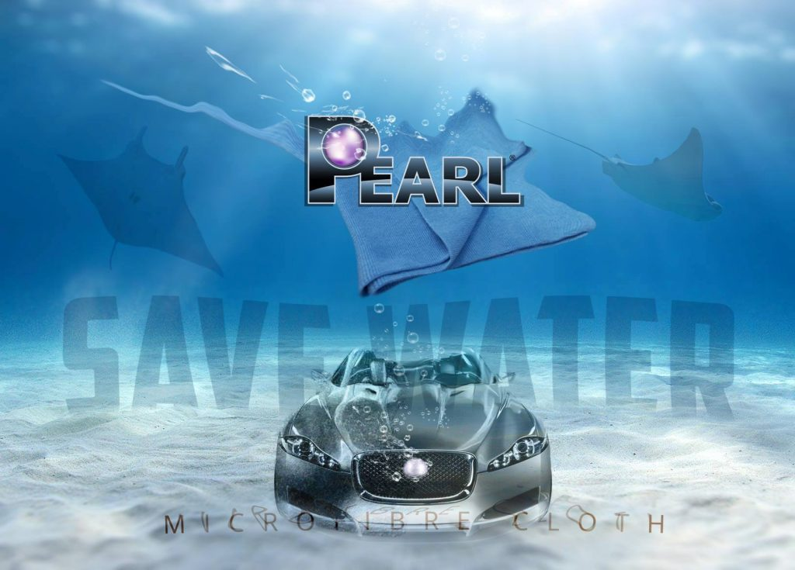

英國 Pearl 研發團隊專為愛車打造的清潔、棕櫚蠟增豔、內裝去污與水性輪胎防護噴霧，原裝現貨熱銷供應。

水性環保配方，內含高階奈米矽與天然巴西棕櫚蠟。洗車、深層拋光、抗紫外線老化與超疏水封體一氣呵成，微胞技術百分之百不刮漆。

頂級潤滑劑與特殊界面活性劑結晶，專為追求極限效率與無痕純淨光澤設計。一噴一抹即刻消除交通油膜、水痕與粉塵，呈現水晶透亮光澤。

溫和而強效的水性生物可分解配方，專為汽車內裝皮椅、儀表飾板、頂棚織布以及輪圈煞車粉塵去垢而調配，中性安全不傷材質。

全水性環保無溶劑配方，絕不含侵蝕橡膠的揮發性石油溶劑。施工後不飛濺、不甩黑油，使胎壁持久保持高雅如新的深黑緞面質感。
設定您家中的車輛數與洗車習慣，即刻計算改用 Pearl 免水洗車每年能為您省下的寶貴時間、水資源與開銷！
* 計算模型依據：傳統洗車每車耗水約 300 公升，免水洗車僅消耗約 0.16 公升；省下時間包含往返洗車場與排隊等待平均每次 1.5 小時；節省花費以自助洗車投幣/泡沫/打蠟每次平均 NT$ 180 估算。
簡單四步，無需複雜繁瑣工具，在家車位輕鬆完成宛如頂級專業美容的完美成果。

專利高潤滑微胞分子滲透包裹泥沙，單向順勢擦拭，沙塵吸附進微纖維布深層，漆面完全零刮痕。
翻面使用乾布畫圓推勻收光，高階奈米矽與天然巴西棕櫚蠟即刻固化，呈現深邃滑順的展間級光澤與超強撥水水珠。
真皮座椅、儀表飾板、頂棚污漬與門檻踩踏痕跡一噴即擦，溫和中性生物降解配方，去除異味且不傷皮質。
全水性抗紫外線配方，快速均勻塗抹於四輪胎壁，5 分鐘極速乾燥，持久呈現自然高雅深黑質感，行駛中絕不甩黑油。
為您解答免水洗車原理與四大商品使用最常關心的實用知識。
保證不傷車漆！ Pearl 的專利高潤滑微胞配方，在噴塗到車身漆面的瞬間，會滲透並在沙塵微粒表面形成一層高滑度的聚合物包裹膜，使污垢懸浮脫離漆面。搭配 400 GSM 專業長毛超細纖維布，污垢會被順勢吸入纖維深處，絕不會在烤漆表層來回研磨。經全球數百萬輛豪華轎跑車長期實證，漆面比傳統水洗更能維持透亮無細紋。
如果車身剛從重度越野場地回來、下護板積滿大塊泥塊厚垢，建議先用少量清水簡單沖掉大塊結塊土塊；而對於一般城市日常行駛所累積的浮塵、雨水污漬、交通油膜與鳥糞樹汁，Pearl 免水洗車液均能直接噴灑擦拭，並在清潔同時形成深層巴西棕櫚蠟防護膜。
一般車主清洗一輛標準房車（Sedan）僅需約 15~20 分鐘；休旅車（SUV）約 20~25 分鐘。平均耗液量約 150~160ml，搭配 2 條超細纖維布（一條擦除污垢，另一條乾布鏡面收光），無需任何等待風乾或擦拭水痕的時間。一瓶 750ml 可完整洗淨 4~5 輛車！
Advanced Ultra Nano（紫精靈）：添加天然頂級巴西棕櫚蠟與高階奈米矽成分，能在清潔的同時完成深度封體、鏡面增豔與抗紫外線防護，特別適合追求極致展間深邃光澤與撥水水珠效果的愛車車主。
Pearl Professional（綠精靈）：不含蠟質，專為追求最快施工速度、無痕純淨水晶光澤設計，極為適合日常頻繁除塵、新車展示透亮以及貼有車身包膜、消光漆車輛使用。